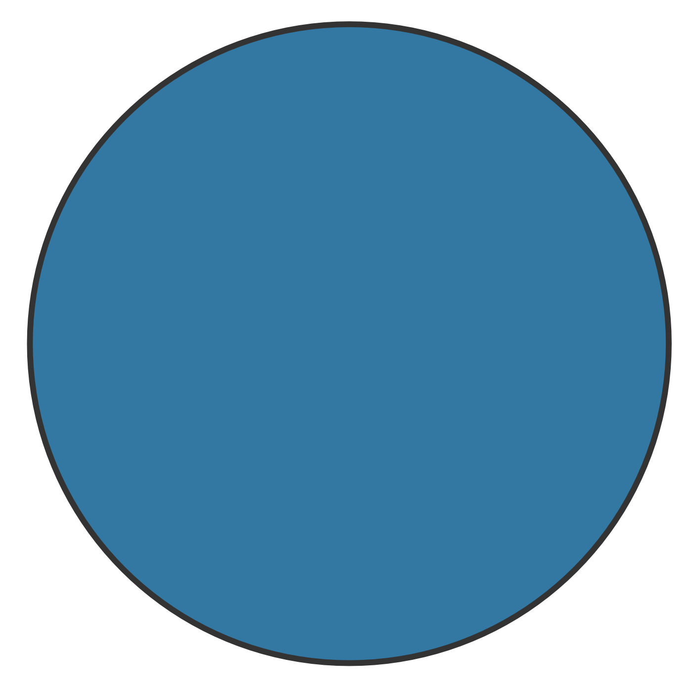

Chapter 10 Bayes Factor
10.1 Encompassing Model
We define a Zero-Inflated Negative Binomial (ZINB) mixed-effects considering only the role of gender as a fixed effect and children’s classroom ID as a random effect for \(p\). Whereas, regarding \(\mu\), we consider the interaction between mother and father attachment together with gender as fixed effects and children’s classroom ID as a random effect. In the R formula syntax, we have
# formula for p
p ~ gender + (1|ID_class)
# formula for mu
mu ~ gender + mother * father + (1|ID_class)10.1.1 Prior Choice
We set the same prior as for the externalizing problems analysis. The resulting prior settings are
## prior class coef group resp dpar nlpar lb ub source
## normal(0, 3) b user
## normal(0, 3) b fatherAnxious (vectorized)
## normal(0, 3) b fatherAvoidant (vectorized)
## normal(0, 3) b fatherFearful (vectorized)
## normal(0, 3) b genderM (vectorized)
## normal(0, 3) b motherAnxious (vectorized)
## normal(0, 3) b motherAnxious:fatherAnxious (vectorized)
## normal(0, 3) b motherAnxious:fatherAvoidant (vectorized)
## normal(0, 3) b motherAnxious:fatherFearful (vectorized)
## normal(0, 3) b motherAvoidant (vectorized)
## normal(0, 3) b motherAvoidant:fatherAnxious (vectorized)
## normal(0, 3) b motherAvoidant:fatherAvoidant (vectorized)
## normal(0, 3) b motherAvoidant:fatherFearful (vectorized)
## normal(0, 3) b motherFearful (vectorized)
## normal(0, 3) b motherFearful:fatherAnxious (vectorized)
## normal(0, 3) b motherFearful:fatherAvoidant (vectorized)
## normal(0, 3) b motherFearful:fatherFearful (vectorized)
## (flat) b zi default
## (flat) b genderM zi (vectorized)
## student_t(3, 0.7, 2.5) Intercept default
## logistic(0, 1) Intercept zi default
## student_t(3, 0, 2.5) sd 0 default
## student_t(3, 0, 2.5) sd zi 0 default
## student_t(3, 0, 2.5) sd ID_class 0 (vectorized)
## student_t(3, 0, 2.5) sd Intercept ID_class 0 (vectorized)
## student_t(3, 0, 2.5) sd ID_class zi 0 (vectorized)
## student_t(3, 0, 2.5) sd Intercept ID_class zi 0 (vectorized)
## gamma(0.01, 0.01) shape 0 default10.1.2 Posterior
The encompassing model is estimated using 6 independent chains with 10,000 iterations (warm-up 2,000). Summary of the encompassing model is presented below.
## Family: zero_inflated_negbinomial
## Links: mu = log; shape = identity; zi = logit
## Formula: internalizing_sum ~ gender + mother * father + (1 | ID_class)
## zi ~ gender + (1 | ID_class)
## Data: data (Number of observations: 847)
## Draws: 6 chains, each with iter = 10000; warmup = 2000; thin = 1;
## total post-warmup draws = 48000
##
## Group-Level Effects:
## ~ID_class (Number of levels: 50)
## Estimate Est.Error l-95% CI u-95% CI Rhat Bulk_ESS Tail_ESS
## sd(Intercept) 0.44 0.08 0.29 0.62 1.00 9576 21295
## sd(zi_Intercept) 2.24 0.55 1.38 3.53 1.00 23180 29061
##
## Population-Level Effects:
## Estimate Est.Error l-95% CI u-95% CI Rhat Bulk_ESS Tail_ESS
## Intercept 0.83 0.13 0.57 1.08 1.00 20193 31209
## zi_Intercept -2.93 0.69 -4.54 -1.84 1.00 23885 24649
## genderM 0.07 0.07 -0.07 0.22 1.00 69024 39479
## motherAnxious 0.46 0.17 0.14 0.78 1.00 28713 34928
## motherAvoidant -0.08 0.25 -0.56 0.41 1.00 27088 33529
## motherFearful 0.63 0.40 -0.13 1.44 1.00 25396 29183
## fatherAnxious 0.07 0.17 -0.26 0.40 1.00 32754 37880
## fatherAvoidant 0.08 0.18 -0.26 0.43 1.00 33099 33066
## fatherFearful 0.36 0.34 -0.29 1.04 1.00 27438 31863
## motherAnxious:fatherAnxious -0.24 0.23 -0.70 0.22 1.00 27476 35909
## motherAvoidant:fatherAnxious 0.24 0.31 -0.37 0.84 1.00 26127 33090
## motherFearful:fatherAnxious -0.75 0.50 -1.75 0.22 1.00 27653 33582
## motherAnxious:fatherAvoidant -0.23 0.24 -0.70 0.23 1.00 28023 34471
## motherAvoidant:fatherAvoidant 0.11 0.30 -0.48 0.70 1.00 24526 32104
## motherFearful:fatherAvoidant -0.18 0.45 -1.10 0.68 1.00 25043 31079
## motherAnxious:fatherFearful -0.46 0.40 -1.25 0.31 1.00 26068 32120
## motherAvoidant:fatherFearful 0.29 0.48 -0.66 1.22 1.00 26407 35222
## motherFearful:fatherFearful -0.35 0.53 -1.41 0.67 1.00 22713 30152
## zi_genderM -0.31 0.41 -1.12 0.49 1.00 49631 32918
##
## Family Specific Parameters:
## Estimate Est.Error l-95% CI u-95% CI Rhat Bulk_ESS Tail_ESS
## shape 2.47 0.32 1.90 3.17 1.00 36269 34308
##
## Draws were sampled using sampling(NUTS). For each parameter, Bulk_ESS
## and Tail_ESS are effective sample size measures, and Rhat is the potential
## scale reduction factor on split chains (at convergence, Rhat = 1).10.2 Hypothesis Matrices
Hypothesis matrices are the same as in the analysis of the externalizing problems.
10.3 Centering and Adjusting
Centering and adjusting procedures are the same as in the analysis of the externalizing problems.
10.4 Results and Sensitivity
Bayes factor and posterior probability of each hypothesis are reported in Table~10.1.
| Hypothesis | Bayes Factor | Posterior Probability | |
|---|---|---|---|
| Null | 3.4e+11 | 0.04 | |
| Monotropy | 8.8e+12 | 0.91 |  |
| Hierarchy | 4.8e+11 | 0.05 | |
| Independence | 1.1e+10 | 0.00 | |
| Integration | 1.8e+10 | 0.00 |
Prior sensitivity analysis is conducted considering the same prior as in the analysis of the externalizing problems. The results of the prior sensitivity analysis are reported in Table~10.2.
| Hypothesis | BF | PP | BF | PP | BF | PP | BF | PP | BF | PP |
|---|---|---|---|---|---|---|---|---|---|---|
| Null | 4.4e+01 | 0.00 | 8.4e+04 | 0.00 | 3.4e+11 | 0.04 | 6.8e+14 | 0.09 | 1.9e+19 | 0.27 |
| Monotropy | 2.2e+04 | 0.28 | 1.9e+07 | 0.64 | 8.8e+12 | 0.91 | 6.5e+15 | 0.89 | 5.0e+19 | 0.72 |
| Hierarchy | 4.0e+04 | 0.52 | 9.0e+06 | 0.29 | 4.8e+11 | 0.05 | 1.2e+14 | 0.02 | 2.2e+17 | 0.00 |
| Independence | 5.8e+03 | 0.07 | 6.4e+05 | 0.02 | 1.1e+10 | 0.00 | 1.6e+12 | 0.00 | 1.6e+15 | 0.00 |
| Integration | 1.0e+04 | 0.13 | 1.5e+06 | 0.05 | 1.8e+10 | 0.00 | 1.6e+12 | 0.00 | 8.2e+14 | 0.00 |
Overall results consistently indicate the Monotropy Hypothesis as the most supported by the data. However, we can observe the same patterns as in the analysis of the externalizing problems. More diffuse prior, favour hypothesis with more equality constraints. Whereas, tighter prior penalizes hypotheses with more equality constraints.
10.5 Selected Model
In the model, we consider only the role of gender and mother attachment as fixed effects of \(\mu\). In the R formula syntax, we have
# formula for p
p ~ gender + (1|ID_class)
# formula for mu
mu ~ gender + mother + (1|ID_class)Again, we specify the same prior distributions as before. The resulting prior settings are
## prior class coef group resp dpar nlpar lb ub source
## normal(0, 3) b user
## normal(0, 3) b genderM (vectorized)
## normal(0, 3) b motherAnxious (vectorized)
## normal(0, 3) b motherAvoidant (vectorized)
## normal(0, 3) b motherFearful (vectorized)
## (flat) b zi default
## (flat) b genderM zi (vectorized)
## student_t(3, 0.7, 2.5) Intercept default
## logistic(0, 1) Intercept zi default
## student_t(3, 0, 2.5) sd 0 default
## student_t(3, 0, 2.5) sd zi 0 default
## student_t(3, 0, 2.5) sd ID_class 0 (vectorized)
## student_t(3, 0, 2.5) sd Intercept ID_class 0 (vectorized)
## student_t(3, 0, 2.5) sd ID_class zi 0 (vectorized)
## student_t(3, 0, 2.5) sd Intercept ID_class zi 0 (vectorized)
## gamma(0.01, 0.01) shape 0 defaultThe model is estimated using 6 independent chains with 6,000 iterations (warm-up 2,000). The model summary is presented below.
## Family: zero_inflated_negbinomial
## Links: mu = log; shape = identity; zi = logit
## Formula: internalizing_sum ~ gender + mother + (1 | ID_class)
## zi ~ gender + (1 | ID_class)
## Data: data (Number of observations: 847)
## Draws: 6 chains, each with iter = 6000; warmup = 2000; thin = 1;
## total post-warmup draws = 24000
##
## Group-Level Effects:
## ~ID_class (Number of levels: 50)
## Estimate Est.Error l-95% CI u-95% CI Rhat Bulk_ESS Tail_ESS
## sd(Intercept) 0.43 0.08 0.29 0.61 1.00 4981 11555
## sd(zi_Intercept) 2.17 0.53 1.34 3.40 1.00 12787 16150
##
## Population-Level Effects:
## Estimate Est.Error l-95% CI u-95% CI Rhat Bulk_ESS Tail_ESS
## Intercept 0.89 0.11 0.66 1.10 1.00 10532 14506
## zi_Intercept -2.81 0.65 -4.31 -1.79 1.00 14230 13767
## genderM 0.07 0.07 -0.07 0.21 1.00 38142 19994
## motherAnxious 0.29 0.09 0.11 0.46 1.00 27686 19778
## motherAvoidant 0.12 0.10 -0.07 0.31 1.00 30305 18855
## motherFearful 0.48 0.12 0.25 0.71 1.00 28322 20529
## zi_genderM -0.29 0.39 -1.07 0.48 1.00 27658 17214
##
## Family Specific Parameters:
## Estimate Est.Error l-95% CI u-95% CI Rhat Bulk_ESS Tail_ESS
## shape 2.53 0.33 1.95 3.26 1.00 21194 18858
##
## Draws were sampled using sampling(NUTS). For each parameter, Bulk_ESS
## and Tail_ESS are effective sample size measures, and Rhat is the potential
## scale reduction factor on split chains (at convergence, Rhat = 1).Figure 10.1: Marginal predicted values according to gender and mother attachment (\(n_{subj} = 847\)).
Figure 10.2: Predicted differences between mother attachment patterns (\(n_{subj} = 847\)).
Overall, results indicate that Fearful, and Anxious children have more problems than Secure children. Moreover, Fearful children have more problems than Avoidant children. Finally, also the difference between Avoidant and Anxious children is close to the threshold.
To evaluate the fit of the model to the data, we computed the Bayesian \(R^2\) using the function brms::bayes_R2(), and we present Posterior Predictions in Figure~10.3.
r2_int
## Estimate Est.Error Q2.5 Q97.5
## R2 0.2224078 0.02975503 0.1660707 0.2825445## Warning: Argument 'nsamples' is deprecated. Please use argument 'ndraws' instead.Figure 10.3: Posterior predictive check (\(n_{subj} = 847\)).
We can see that the actual variance explained by fixed effects and random effects is around 22%. Moreover, the posterior predictive check indicates a good fit to the data.